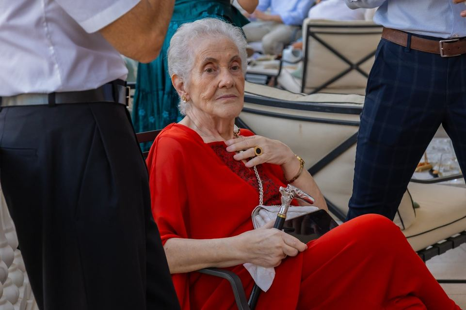

La muerte digna de mi madre

Los días van pasando en el hospital. Mi madre, María Luisa, sigue sin admitir ningún tipo de alimento. Le quitan también el suero porque le está hinchando las piernas. La dosis mínima de morfina hace que cada vez le cueste más mantenerse…
María Luisa Herrera, mi madre, vivía sola en el centro de Madrid. Mis hermanos y yo estábamos muy pendientes de lo que pudiera necesitar, pero a sus 87 años seguía siendo una mujer independiente. Todos los días, con sol abrasador o chuzos de punta, ella se subía en el autobús a desayunar con sus amigas en un bar de la calle Esparteros.